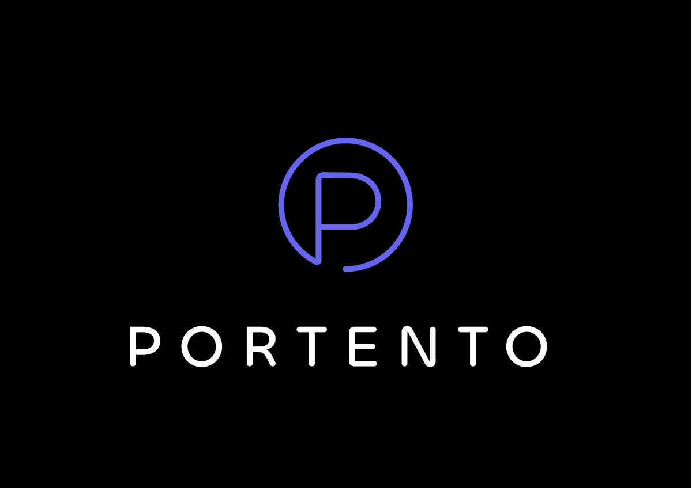

Portento en escena
La seccion de videos sigue activa y se integra al nuevo layout para que el sitio no pierda el material que ya estaba en linea.

Se conserva el material ya visible en el sitio de Portento: videos, Spotify, el proyecto editorial y el acceso a Foro Total Play.
La seccion de videos sigue activa y se integra al nuevo layout para que el sitio no pierda el material que ya estaba en linea.
El embed principal del artista sigue disponible dentro de la home.
Musica incidental original de la obra con acceso al ebook y al soundtrack.

Concierto de 2021 con embed de album y acceso a otros conciertos.
Ver otros conciertosUn archivo consultable con buscador y filtro por idioma. Cada cancion se despliega completa para que el sitio funcione tambien como biblioteca de letras.